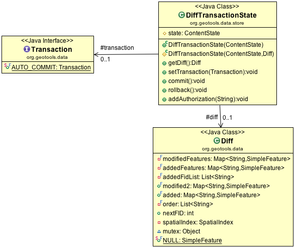
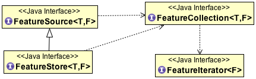
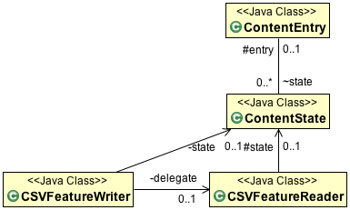

Implementing FeatureStore¶
In this part we will complete the CSVDataStore. At the end of this section we will have a full functional CSVDataStore supporting both read and write operations.
CSVDataStore Read-Write¶
The DataStore API provides three categories of public methods involved in making content writable.
- DataStore.createSchema( featureType ) - sets up a new entry for content of the provided type
- DataStore.getFeatureWriter( typeName ) - a low-level iterator that allows writing
- DataStore.getFeatureSource( typeName ) - read-only FeatureSource or FeatureStore for read-write
The infrastructure to support this functionality is quite extensive. A few highlights from the above diagram:
- ContentState.listerners - event notification for changed content
- ContentState.tx - transaction object used by clients to stash session callbacks
- ContentState.transactionState: provides transaction independence between threads working on the same content.
CSVDataStoreFactory¶
Now that we are going to be writing files we can fill in the createNewDataStore method.
Open up CSVDataStoreFactory and fill in the method createNewDataStore( Map params ) which we skipped over earlier.
private static final Logger LOGGER = Logging.getLogger("org.geotools.data.csv"); public DataStore createNewDataStore(Map<String, Serializable> params) throws IOException { File file = (File) FILE_PARAM.lookUp(params); if (file.exists() ){ LOGGER.warning("File already exsists: "+file); } return new CSVDataStore(file); }
The above code snippet introduces a GeoTools Logger we can use for warnings.
Because GeoTools is a well mannered library it can be configured to use different logging engines. This allows it to integrate smoothly with larger projects.
To see this change in context review
CSVDataStoreFactory.javafrom the gt-csv plugin.
There is no DataStoreFinder method for creating new content. We expect this method to be called from a content creation wizard that already is making use of the DataStoreFactory.
CSVDataStore¶
Returning to CSVDataStore we have a number of new methods to override to support write functionality.
Introduce the createSchema( featureType ) method used to set up a new file.
Our CSV format has several limitations:
- Representing Points, using LAT and LON columns
- Attributes are assumed to be Strings (this is a text format after all)
- CoordinateReferenceSystem is limited to WGS84
Add createSchema( featureType ):
@Override public void createSchema(SimpleFeatureType featureType) throws IOException { List<String> header = new ArrayList<String>(); GeometryDescriptor geometryDescrptor = featureType.getGeometryDescriptor(); if (geometryDescrptor != null && CRS.equalsIgnoreMetadata(DefaultGeographicCRS.WGS84, geometryDescrptor.getCoordinateReferenceSystem()) && geometryDescrptor.getType().getBinding().isAssignableFrom(Point.class)) { header.add("LAT"); header.add("LON"); } else { throw new IOException("Unable use LAT/LON to represent " + geometryDescrptor); } for (AttributeDescriptor descriptor : featureType.getAttributeDescriptors()) { if (descriptor instanceof GeometryDescriptor) continue; header.add(descriptor.getLocalName()); } // Write out header, producing an empty file of the correct type CsvWriter writer = new CsvWriter(new FileWriter(file),','); try { writer.writeRecord( header.toArray(new String[header.size()])); } finally { writer.close(); } }
And revise our implementation of createFeatureSource( ContentEntry ).
While we will still return a FeatureSource, we have the option of returning a the subclass FeatureStore for read-write files.
The FeatureStore interface provides additional methods allowing the modification of content.
@Override protected ContentFeatureSource createFeatureSource(ContentEntry entry) throws IOException { if (file.canWrite()) { return new CSVFeatureStore(entry, Query.ALL); } else { return new CSVFeatureSource(entry, Query.ALL); } }
If you would like to review the gt-csv plugin has the completed
CSVDataStore.javafile.
CSVFeatureStore¶
CSVFFeatureStore has an interesting design constraint:
- It implements FeatureStore, which extends FeatureSource
- It extends the base class ContentFeatureStore, which handles most of the heavy lifting
So what is the trouble? Java only allows single inheritance - forcing us to account for all the work we did reading features in CSVFeatureSource.
Many first generation DataStore implementations practiced cut and paste coding, meaning fixes would often get applied in one spot and not another making for a frustrating debugging experience.
Instead we are going to use a delegate CSVFeatureStore, hidden from public view, simply to call its methods for reading. This prevents code duplication, makinng the code easier to maintain, at the coast of some up front complexity.
CSVFeatureStore¶
We have to play a few tickets to ensure both the CSVFeatureStore and its hidden CSVFeatureSource are always on the same transaction, but other than that this approach is working well.
Create CSVFeatureStore:
package org.geotools.tutorial.csv; import java.io.IOException; import org.geotools.data.FeatureReader; import org.geotools.data.FeatureWriter; import org.geotools.data.Query; import org.geotools.data.QueryCapabilities; import org.geotools.data.ResourceInfo; import org.geotools.data.Transaction; import org.geotools.data.store.ContentEntry; import org.geotools.data.store.ContentFeatureStore; import org.geotools.data.store.ContentState; import org.geotools.geometry.jts.ReferencedEnvelope; import org.opengis.feature.FeatureVisitor; import org.opengis.feature.simple.SimpleFeature; import org.opengis.feature.simple.SimpleFeatureType; import org.opengis.feature.type.Name; /** * Read-write access to CSV File. * * @author Jody Garnett (Boundless) * @author Ian Turton (Envitia) */ public class CSVFeatureStore extends ContentFeatureStore { public CSVFeatureStore(ContentEntry entry, Query query) { super(entry, query); }
Our first responsibility is to implement a CSVFeatureWriter for internal use. Transaction and Event Notification are handled by wrappers applied to our CSVFeatureWriter.
// // CSVFeatureStore implementations // @Override protected FeatureWriter<SimpleFeatureType, SimpleFeature> getWriterInternal(Query query, int flags) throws IOException { return new CSVFeatureWriter(getState(), query); }
Note
In general the “Gang of Four” decorator pattern is used to layer functionality around the raw FeatureReader and FeatureWriters you provided. This is very similar to the design of the java-io library (where a BufferedInputStream can be wrapped around a raw FileInputStream).
You can control what decorators/wrappers are applied, by as shown in the following table.
Handle Override reprojection canReproject() filtering canFilter() max feature limiting canLimit() sorting canSort() locking canLock() As an example if your data format supported an attribute index you would be in position to override canSort() to return true if an index was available for sorting.
Next we can set up our delegate, taking care to ensure both use the same Transaction.
/** * Delegate used for FeatureSource methods (We do this because Java cannot inherit from both ContentFeatureStore and CSVFeatureSource at the same * time */ CSVFeatureSource delegate = new CSVFeatureSource(entry, query) { @Override public void setTransaction(Transaction transaction) { super.setTransaction(transaction); CSVFeatureStore.this.setTransaction(transaction); // Keep these two implementations on the same transaction } }; @Override public void setTransaction(Transaction transaction) { super.setTransaction(transaction); if( delegate.getTransaction() != transaction ){ delegate.setTransaction( transaction ); } }
Use the delegate to implement the internal ContentDataStore methods.
// // Internal Delegate Methods // Implement FeatureSource methods using CSVFeatureSource implementation // @Override protected SimpleFeatureType buildFeatureType() throws IOException { return delegate.buildFeatureType(); } @Override protected ReferencedEnvelope getBoundsInternal(Query query) throws IOException { return delegate.getBoundsInternal(query); } @Override protected int getCountInternal(Query query) throws IOException { return delegate.getCountInternal(query); } @Override protected FeatureReader<SimpleFeatureType, SimpleFeature> getReaderInternal(Query query) throws IOException { return delegate.getReaderInternal(query); } @Override protected boolean handleVisitor(Query query, FeatureVisitor visitor) throws IOException { return delegate.handleVisitor(query, visitor); }
- We have to do one “fix” to allow handle visitor method to be called - add the following to
CSVFeatureSource.
Note
Why does this work - because Java visibility rules are insane. Even though the method is marked protected it now has package visibility can be called by its peer CSVFeatureStore.
Use the delegate to implement the public FeatureSource methods.
// // Public Delegate Methods // Implement FeatureSource methods using CSVFeatureSource implementation // @Override public CSVDataStore getDataStore() { return delegate.getDataStore(); } @Override public ContentEntry getEntry() { return delegate.getEntry(); } public Transaction getTransaction() { return delegate.getTransaction(); } public ContentState getState() { return delegate.getState(); } public ResourceInfo getInfo() { return delegate.getInfo(); } public Name getName() { return delegate.getName(); } public QueryCapabilities getQueryCapabilities() { return delegate.getQueryCapabilities(); } // public start }
You can see what this looks like in context by reviewing
CSVFeatureStore.java </../src/main/java/org/geotools/tutorial/csv2/CSVFeatureStore.javafrom the gt-csv plugin.
CSVFeatureWriter¶
This class uses an interesting trick to simulate updating a file in place, while still supporting streaming operation. We will be outputting content to a temporary file, leaving the original for concurrent processes such as rendering. When streaming is closed the temporary file is moved into the correct location to effect the change.
CSVFeatureWriter¶
To avoid duplicating all the work we put into CSVFeatureReader this code uses the same delegate trick encountered earlier.
A couple common questions:
Q: How do you make a Transaction out of our simple reader?
ContentFeatureSource uses wrappers (or delegates) to process the data on the fly.
Example: So if a Filter is provided the wrapper will skip over features so the user only sees the content they requested?
Q: How do you know what wrappers to use?
ContentFeatureSource checks to see if a wrapper is needed, and if so uses the MaxFetureReader wrapper.
// max feature limit if ( !canLimit() ) { if (query.getMaxFeatures() != -1 && query.getMaxFeatures() < Integer.MAX_VALUE ) { reader = new MaxFeatureReader<SimpleFeatureType, SimpleFeature>(reader, query.getMaxFeatures()); } }
MaxFeatureWrapper counts the features that are returned, and returns hasNext() false once the configured limit has been reached:
public boolean hasNext() throws IOException { return (featureReader.hasNext() && (counter < maxFeatures)); }
Q: How does that work with transactions?
ContentState managed a DiffTransactionState used to capture each modification. Each change is recorded by FeatureId (a feature recorded for each add or modification, or null recorded for a delete).
Transaction and DiffTransactionState¶
As CSVFeatureReader is used to access the file contents, a wrapper checks the Diff and dynamically modifies the content to match any outstnding edits. When it reaches the end of your file, it keeps going listing any features that were added.
Q: That is fine for transaction independence, what if two FeatueSources are using the same Transaction?
Those two FeatureSources would be configured with the same ContentState, and thus have the same view of the world.
The ContentDataStore API is divided into two levels:
Public classes focused on ease of use for client code - examples include DataStore, FeatureSource, Transaction.
Private classes focused on ease of development for DataStore developers - examples include ContentEntry, ContentEntry, BatchFeatureEvent

Note
Our first generation DataStore implementations tried to produce a similar effect using a series of HashMaps, with suitably scary consequences for code readability. If any additional information is required by your DataStore implementation you are actively encouraged to subclass ContentState.
Q: Wait what about when I am not using a Transaction? How do I get a ContentState?
When the use has not specified a Transaction we default to the use of Transaction.AUTO_COMMIT.
This makes the ContentState recorded for Transaction.AUTO_COMMIT special in that it represents the point of truth on the files current status. The bounds recorded for Transaction.AUTO_COMMIT are the bounds of the file. The number of features recorded for Transaction.AUTO_COMMIT are the the number of features recorded in the file.
Now that we have some idea of what is riding on top, lets implement our CSVFeatureWriter:
Create the file CSVFeatureWriter.java:
package org.geotools.tutorial.csv; import java.io.File; import java.io.FileWriter; import java.io.IOException; import java.nio.file.Files; import java.nio.file.StandardCopyOption; import java.util.NoSuchElementException; import org.geotools.data.DataUtilities; import org.geotools.data.FeatureWriter; import org.geotools.data.Query; import org.geotools.data.store.ContentState; import org.geotools.feature.simple.SimpleFeatureBuilder; import org.opengis.feature.Property; import org.opengis.feature.simple.SimpleFeature; import org.opengis.feature.simple.SimpleFeatureType; import com.csvreader.CsvReader; import com.csvreader.CsvWriter; import com.vividsolutions.jts.geom.Point; /** * Iterator supporting writing of feature content. * * @author Jody Garnett (Boundless) * @author Lee Breisacher */ public class CSVFeatureWriter implements FeatureWriter<SimpleFeatureType, SimpleFeature> { /** State of current transaction */ private ContentState state; /** Delegate handing reading of original file */ private CSVFeatureReader delegate; /** Temporary file used to stage output */ private File temp; /** CsvWriter used for temp file output */ private CsvWriter csvWriter; /** Current feature available for modification, may be null if feature removed */ private SimpleFeature currentFeature; /** Flag indicating we have reached the end of the file */ private boolean appending = false; /** Row count used to generate FeatureId when appending */ int nextRow = 0; }
Our construct is responsible for a lot of activities:
- Setting up a temporary file for output
- Creating a CsvWriter for output
- Quickly making a copy of the file if we are just interested in appending
- Starting the file off with a copy of the headers
- Creating a delegate to read the origional file
Putting all that together:
public CSVFeatureWriter(ContentState state, Query query) throws IOException { this.state = state; String typeName = query.getTypeName(); File file = ((CSVDataStore) state.getEntry().getDataStore()).file; File directory = file.getParentFile(); this.temp = File.createTempFile(typeName + System.currentTimeMillis(), "csv", directory); this.csvWriter = new CsvWriter(new FileWriter(this.temp), ','); this.delegate = new CSVFeatureReader(state,query); this.csvWriter.writeRecord(delegate.reader.getHeaders()); }
Add FeatureWriter.getFeatureType() implementation:
@Override public SimpleFeatureType getFeatureType() { return state.getFeatureType(); }
Add hasNext() implementation, making use of delegate before switching over to returning false when appending.
@Override public boolean hasNext() throws IOException { if( csvWriter == null ){ throw new IOException("Writer has been closed"); } if (this.appending) { return false; // reader has no more contents } return delegate.hasNext(); }
The next() method is used for two purposes:
- To access Features for modification or removal (when working through existing content)
- To create new Features (when working past the end of the file)
The next() implementation has a couple of interesting tricks:
- Care is taken to write out the currentFeature if required
- The next feature is fetched from the delegate; or
- when appending a new feature is created for the user to fill in with attributes
Here is what that looks like:
@Override public SimpleFeature next() throws IOException, IllegalArgumentException, NoSuchElementException { if( csvWriter == null ){ throw new IOException("Writer has been closed"); } if (this.currentFeature != null) { this.write(); // the previous one was not written, so do it now. } try { if( !appending ){ if( delegate.reader != null && delegate.hasNext() ){ this.currentFeature = delegate.next(); return this.currentFeature; } else { this.appending = true; } } SimpleFeatureType featureType = state.getFeatureType(); String fid = featureType.getTypeName()+"."+nextRow; Object values[] = DataUtilities.defaultValues( featureType ); this.currentFeature = SimpleFeatureBuilder.build( featureType, values, fid ); return this.currentFeature; } catch (IllegalArgumentException invalid ){ throw new IOException("Unable to create feature:"+invalid.getMessage(),invalid); } }
Note
There are a large number of utility classes to perform common functions, take a look around before building somehting yourself.
- DataUtilities: Mix of methods helping developers use DataStore, with a few methods to help implementors perform common tasks. Acts as Facade for a wide range of services
- SimpleFeatureBuilder: used to ease interaction with FeatureFactory
Add remove() implementation, marking the currentFeature as null.
/** * Mark our {@link #currentFeature} feature as null, it will be skipped when written effectively removing it. */ public void remove() throws IOException { this.currentFeature = null; // just mark it done which means it will not get written out. }
Add write() implementation:
public void write() throws IOException { if (this.currentFeature == null) { return; // current feature has been deleted } for (Property property : currentFeature.getProperties()) { Object value = property.getValue(); if (value == null) { this.csvWriter.write(""); } else if (value instanceof Point) { Point point = (Point) value; this.csvWriter.write(Double.toString(point.getX())); this.csvWriter.write(Double.toString(point.getY())); } else { String txt = value.toString(); this.csvWriter.write(txt); } } this.csvWriter.endRecord(); nextRow++; this.currentFeature = null; // indicate that it has been written }
Note
Previous implementations would make a copy of the feature to return. When write was called copy would be compared to the origional to see if any change had been made. Why? So that an appropriate event notification could be sent out.
This is another case where a wrapper has been created, and applied by ContentFeatureStore.
Like the constructor the implementation of close() has a number of responsibilities.
To implement close() we must remember to write out any remaining features in the delegate before closing our new file.
The last thing our FeatureWriter must do is replace the existing File with our new one.
@Override public void close() throws IOException { if( csvWriter == null ){ throw new IOException("Writer alread closed"); } if (this.currentFeature != null) { this.write(); // the previous one was not written, so do it now. } // Step 1: Write out remaining contents (if applicable) while (hasNext()) { next(); write(); } csvWriter.close(); csvWriter = null; if( delegate != null ){ this.delegate.close(); this.delegate = null; } // Step 2: Replace file contents File file = ((CSVDataStore) state.getEntry().getDataStore()).file; Files.copy(temp.toPath(), file.toPath(), StandardCopyOption.REPLACE_EXISTING ); }
You can see what this looks like in context by reviewing
CSVFeatureWriter.java </../src/main/java/org/geotools/tutorial/csv2/CSVFeatureWriter.javafrom the gt-csv plugin.